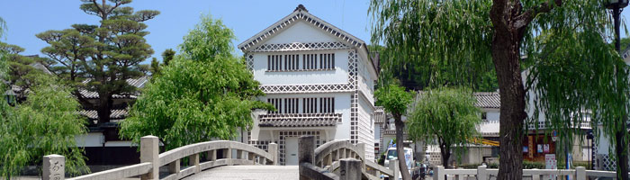

<!--#include virtual="/header.html" -->

<!--#include virtual="/title.html" -->

<main id="tourist">

  <section class="titlevisual">
    <div class="parallax">
      <div class="background bg01"></div>
    </div>
    <div class="inner">
      <h2>TOURIST ATTRACTIONS<span>観光スポット</span></h2>
      <div class="catchphrase catchphrase_left">
        <span>心豊かな時を過ごせる町</span><br><span>倉敷美観地区へようこそ</span>
      </div>
      <div class="description description_right">
        <p class="txt">江戸時代から続く風情ある町並みを歩けば、<br>心躍る発見に出会えます。</p>
      </div>
    </div>
  </section>

  <ul itemscope itemtype="https://schema.org/BreadcrumbList" class="breadcrumbs">
    <li itemprop="itemListElement" itemscope itemtype="https://schema.org/ListItem">
      <a itemprop="item" href="/"><span itemprop="name">HOME</span></a><meta itemprop="position" content="1">
    </li>
    <li itemprop="itemListElement" itemscope itemtype="https://schema.org/ListItem">
      <a itemprop="item" href="/tourist/"><span itemprop="name">観光スポット</span></a><meta itemprop="position" content="2">
    </li>
    <li itemprop="itemListElement" itemscope itemtype="https://schema.org/ListItem">
      <span itemprop="name">倉敷考古館</span><meta itemprop="position" content="3">
    </li>
  </ul>

  <section class="content">
    <div class="inner">

      <h3>KURASHIKI ARCHAEOLOGICAL MUSEUM<span>倉敷考古館</span></h3>
      <figure class="detail_main"></figure>
      <figcaption class="detail_figcaption">1950年（昭和25年）に江戸時代の米倉を改良して開館しました。吉備地方を中心とした考古学資料や古墳から出土した古代人の生活用具の石器、土器、埴輪、刀剣など 1,500点を展示。国外の物では、古代ペルーのアンデス文明の土器や織物、イランの考古学資料、中国の漢・唐の頃の文化財などが展示されています。</figcaption>

      <aside>
        <h5>詳細</h5>
        <div class="dllist">
          <dl class="dlbox">
            <dt class="dtbox">
              <p class="wrap">住所</p>
            </dt>
            <dd class="ddbox">
              <p class="wrap">〒710-0046 岡山県倉敷市中央1-3-13</p>
            </dd>
          </dl>
          <dl class="dlbox">
            <dt class="dtbox">
              <p class="wrap">電話番号</p>
            </dt>
            <dd class="ddbox">
              <p class="wrap">086-422-1542</p>
            </dd>
          </dl>
        </div>
      </aside>

      <p class="cooperation">取材協力：（財）倉敷考古館</p>

      <p class="btn"><a href="http://www.kurashikikoukokan.com/" target="_blank"><span>公式サイトをみる</span></a></p>

      <p class="btn_back"><a href="/tourist/"><span>一覧に戻る</span></a></p>

    </div>
  </section>

</main>

<!--#include virtual="/footer.html" -->